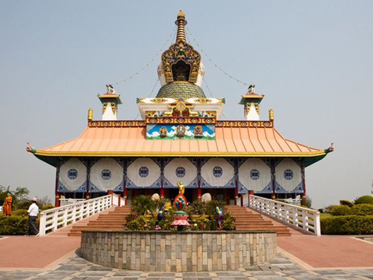
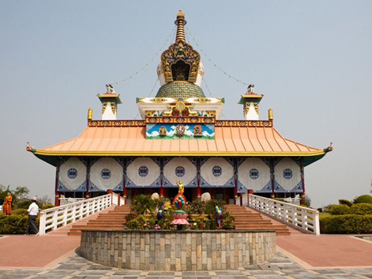

Exploring Lumbini
```Lumbini, the birthplace of Lord Buddha, is one of the most sacred pilgrimage sites in the world. Located in the Rupandehi District of Nepal, it attracts thousands of pilgrims and tourists every year. The peaceful surroundings and historic significance make it a must-visit destination.
Overview
Lumbini is recognized as a UNESCO World Heritage Site. The area is filled with ancient monasteries, sacred gardens, and cultural landmarks. It offers visitors a serene environment to explore the life and teachings of Buddha.
Major Attractions
Some key sites in Lumbini include:
- Maya Devi Temple: The exact birthplace of Buddha
- Monastic Zone: Temples built by Buddhist communities from around the world
- Holy Ponds: Sacred ponds for meditation and rituals
- Ashokan Pillar: An ancient pillar marking Emperor Ashoka's visit
Activities
Visitors can explore monasteries, attend meditation sessions, or join guided cultural tours. Photography, peaceful walks, and learning about Buddhist philosophy are highly recommended.
Interesting Facts
- Lumbini is one of the four main pilgrimage sites in Buddhism.
- The sacred garden and monasteries are maintained by various countries.
- The site attracts both religious and cultural tourism worldwide.
- Annual Buddha Jayanti festival is celebrated with great devotion.
Whether you are a pilgrim or a traveler, Lumbini offers a unique experience of peace, history, and spirituality. A visit here is a journey into the life of one of the world’s greatest spiritual leaders.

 
